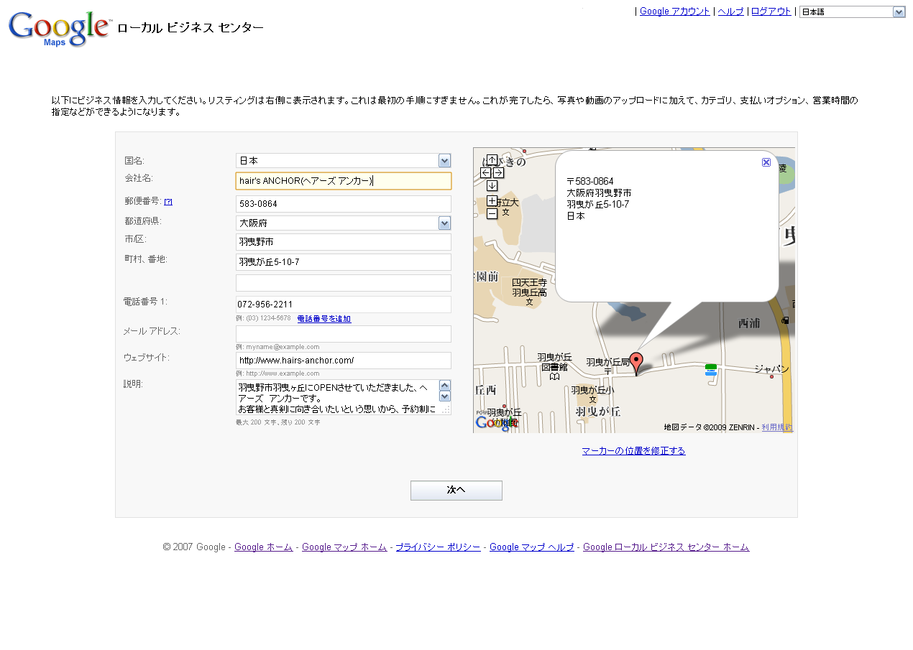
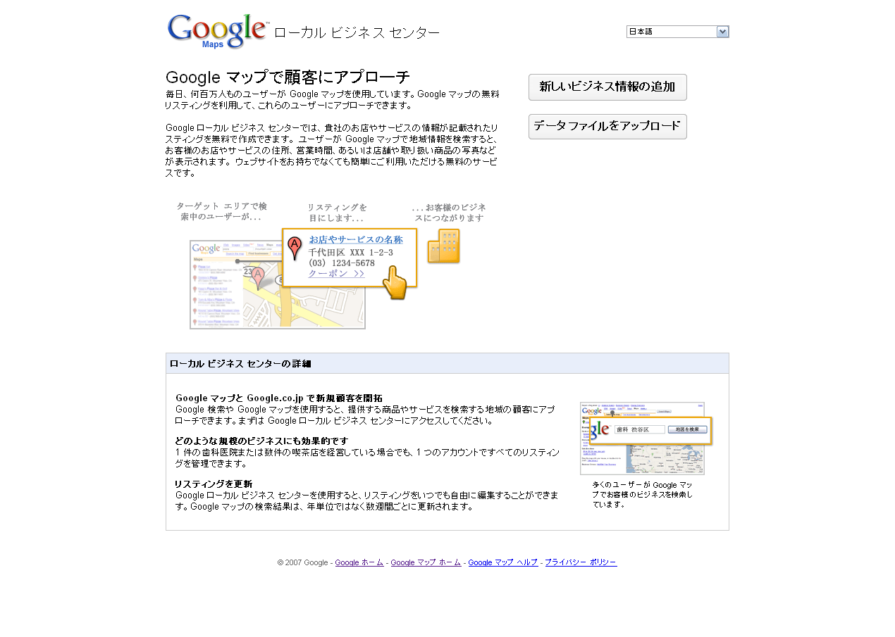

STEP 1
1.Google Maps ローカル ビジネス センターにアクセスします。
2.「新しいビジネス情報の追加」ボタンを押します。
STEP 2
以下の情報を入力し「次へ」を押します。
国名：日本
会社名：hair's ANCHOR(ヘアーズ アンカー)
郵便番号：583-0864
都道府県:大阪府
市/区:羽曳野市
町村、番地:羽曳が丘5-10-7
電話番号 1:072-956-2211
ウェブサイト:http://www.hairs-anchor.com/
説明:羽曳野市羽曳ヶ丘にOPENさせていただきました、ヘアーズ アンカーです。
お客様と真剣に向き合いたいという思いから、予約制にさせて頂き、お客様お一人ずつ、丁寧な施術をサービスさせていただく環境にしております。
小スペースながら、ゆったりとした空間の中で、じっくりカウンセリングをさせていただき、一緒にお客様に似合うヘアスタイルを考えさせていただきます。

STEP 3
補足情報を入力し、「送信」ボタンを押します。

STEP 4
リスティングの確認方法を選択し、「完了」ボタンを押します。